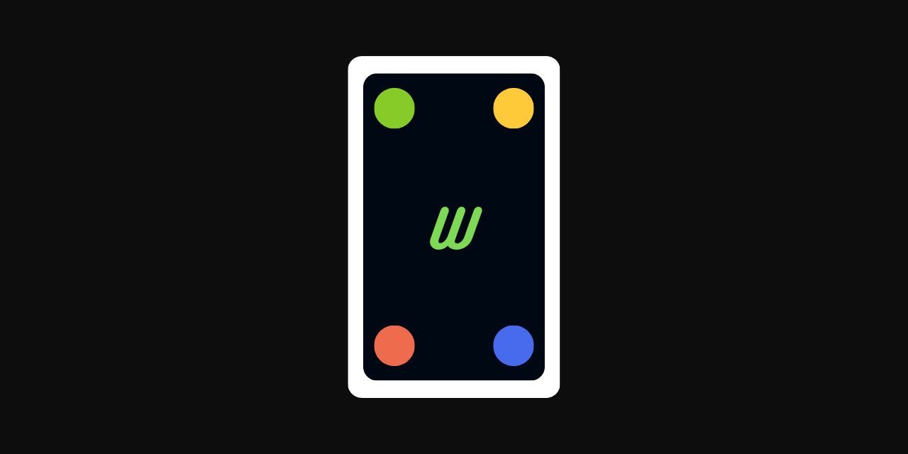

wuno-bot

WUNO (Whatsapp UNO) Bot
Bot whatsapp yang berguna untuk bermain UNO.


Project ini terinspirasi dari Exium1/UnoBot dan mjsalerno/UnoBot yang beberapa asset dan logika pemrograman juga terdapat dalam project ini.
Bot ini adalah bot whatsapp yang memungkinkan pengguna untuk bermain UNO langsung di whatsapp. Dengan menjapri bot, mengirimkan kode permainan ke teman anda, dan memulai permainan kamu bisa bermain UNO seperti kamu bermain dengan teman langsung.
Sebelum Menggunakan
Bot ini tidak terafiliasi dan didukung oleh WhatsApp maupun UNO. Mohon pengertian jika menemukan masalah suatu saat nomor bot diblokir oleh pihak WhatsApp.
Bot ini menyimpan data nomor telepon serta username pemain untuk keperluan mekanisme permainan.
Jika kamu adalah orang yang menjalankan bot ini, kamu wajib bertanggung jawab atas data-data pemain yang tersimpan. Jangan melimpahkan data pribadi ke pihak yang tidak bertanggung jawab. Jika mereka ingin menghapus data pribadi mereka, kamu wajib menghapusnya.
Jika kamu adalah pemain, kamu berarti telah mengetahui serta menyetujui bahwa kamu mengizinkan datamu untuk disimpan ke bot lawan bicara. Jika ingin menghapus data, silahkan hubungi operator bot yang bertanggung jawab.
Pesan untuk Administrator
Untuk menghindari kejadian yang tidak diinginkan, lebih baik menggunakan Database MySQL yang di host secara local. Kemudian, disarankan untuk tidak menghosting bot secara 24 jam, host bot secara local memang pada saat dibutuhkan.
Pesan untuk Pemain
Pilihlah bot dengan administrator yang bertanggung jawab dan dapat dipercaya. Lebih dari itu, pilihlah administrator yang mengerti dan teman dekatmu.
Prerequisites
Anda butuh
- Node.js LTS dan NPM (atau Package Manager lainnya)
- Database MySQL atau MariaDB
- Akun whatsapp tak terpakai
- Google chrome
Pemakaian
Cloning Dari Github
Jalankan perintah ini Command Line.
# HTTPS
git clone https://github.com/reacto11mecha/wuno-bot.git
# SSH
git clone git@github.com:reacto11mecha/wuno-bot.git
Menginstall package
Anda ke root directory project dan menginstall package yang diperlukan.
npm install
# atau menggunakan pnpm
pnpm install
Buat file .env
Pertama-tama, copy file env.example menjadi .env dan isikan value yang sesuai.
Keterangan .env:
DATABASE_URL: URL Database MySQL yang akan dijadikan penyimpanan data (WAJIB)CHROME_PATH: Path ke executable google chrome yang terinstall (WAJIB)PREFIX: Prefix bot agar bisa dipanggil dan digunakan, defaultU#(Opsional)
Di perlukan google chrome supaya bisa menerima dan mengirim gif, sticker, dan gambar secara konsisten. Penjelasan lebih lanjut, cek dokumentasi wwebjs.
Mengenerate dan push schema ke database
Karena menggunakan database yang SQL-Based dan prisma, diperlukan untuk mengenerate dan push schema ke database. Di bawah ini adalah perintah-perintah yang harus dilaksanakan.
Generate schema prisma:
npm run db:generate
# atau menggunakan pnpm
pnpm db:generate
Push schema prisma ke database:
npm run db:push
# atau menggunakan pnpm
pnpm db:push
Menjalankan Bot
Sebelum menjalankan, terlebih dahulu mem-build kode typescript supaya bisa dijalankan di production mode.
npm run build
# atau menggunakan pnpm
pnpm build
Selesai mem-build bot, jangan lupa menjalankan database MySQL/MariaDB. Jika sudah berjalan baru bisa menggunakan bot dengan mengetikkan
npm start
# atau menggunakan pnpm
pnpm start
Jika baru pertama kali menjalankan, scan barcode di terminal untuk dihubungkan ke whatsapp di handphone.
Jika ingin dijalankan seperti mode production menggunakan pm2 bisa menjalankan perintah di bawah ini, jangan lupa autentikasi terlebih dahulu mengikuti langkah di atas karena lebih mudah. Jangan lupa untuk menginstall pm2 secara global.
pm2 start ecosystem.config.js
Penjelasan Permainan
Bot ini adalah bot yang digunakan untuk bermain uno di whatsapp. Cara kerjanya dengan mengirimkan perintah lewat DM pribadi ke bot ini, tapi juga bisa digunakan di grup namun terbatas untuk membuat dan bergabung dalam permainan.
Untuk membuat permainan caranya dengan menjalankan U#creategame (atau U#cg) dan akan membuat kode yang bisa diteruskan ke orang lain.
Orang yang diberikan meneruskan kembali kode itu ke bot dan akan masuk ke sesi permainan sesuai dengan kode yang sudah diberikan sebelumnya.
Setelah dirasa sudah cukup orang, permainan bisa dimulai menggunakan U#startgame (atau U#sg) kartu akan diberikan dan permainan dimulai.
Untuk bermain, gunakan U#play <kartu kamu>
(atau U#p <kartu kamu>) untuk menaruh kartu yang sesuai dengan apa yang ada di deck. Jika valid, kartu akan ditaruh dan giliran bermain akan beralih ke pemain selanjutnya.
Kartu di bot ini memiliki sebuah format. Kartu yang ini memiliki 4 warna yaitu warna merah, kuning hijau, dan biru yang di ikuti dengan nomor 0 sampai 9, misal red0. Kemudian kartu pilih warna wild juga tambah 4 wilddraw4 yang bisa di sebutkan warnanya. Kemudian kartu spesial yang terdiri reverse (memutar giliran main), skip (melewati giliran main), dan draw2 (tambah dua kartu) dengan format warna disebut terlebih dahulu baru jenis kartu spesial disebutkan.
Jika kamu tidak memiliki kartu ambilah kartu baru dengan menggunakan U#draw (atau U#d) maka kartu baru akan diambil dan giliran bermain akan beralih ke pemain selanjutnya.
Untuk berkomunikasi dengan pemain lain di game, gunakan U#say <pesan mu>.
Untuk melihat lebih jelas apa maksud dari perintah, gunakan U#help <nama lengkap perintah>.
Daftar Perintah
Berikut daftar perintah yang sudah dibuat. Jika konfigurasi prefix diubah maka prefix akan mengikuti konfigurasi yang sudah ada.
banPerintah ini digunakan untuk menge-ban seseorang, semisal ada orang yang tidak dikenali masuk ke permainan.
Contoh penggunaan:
U# ban <nama yang ingin di ban>Alias:
bContoh balasan:
Berhasil menge-ban E. Sekarang dia tidak ada dalam permainan.cardsPerintah ini digunakan untuk mengecek kartu yang ada pada saat kamu bermain.
Contoh penggunaan:
U# cardsAlias:
cContoh balasan:
Kartu kamu: greenskip, yellow4, red6, blue1creategamePerintah ini digunakan untuk membuat permainan baru.
Setelah kode berhasil dibuat, bot akan mengirimkan kode yang bisa diteruskan ke pemain lain agar bisa bergabung ke dalam permainan.
Contoh penggunaan:
U# creategameAlias:
cg,createContoh balasan:
Game berhasil dibuat.
Ajak teman kamu untuk bermain...drawPerintah ini digunakan untuk mengambil kartu baru pada saat giliranmu.
Terkadang kamu tidak memiliki kartu yang pas pada saat bermain, perintah ini bertujuan untuk mengambil kartu baru. ke dalam permainan.
Contoh penggunaan:
U# drawAlias:
d,pickup,newcardContoh balasan:
Berhasil mengambil kartu baru, red6. Selanjutnya adalah giliran A untuk bermainendgamePerintah ini digunakan untuk menghentikan permainan yang belum/sedang berjalan.
Perintah ini hanya bisa digunakan oleh orang yang membuat permainan.
Contoh penggunaan:
U# endgameAlias:
eg,endContoh balasan:
A telah menghentikan permainan. Terimakasih sudah bermain!infogamePerintah ini digunakan untuk mengetahui informasi dari sebuah permainan.
Jika kamu sudah memasuki sebuah permainan, tidak perlu memasukan id game, tetapi kalau belum diperlukan id game tersebut.
Contoh penggunaan:
U# infogame <id game>Alias:
i,ig,infoContoh balasan:
A telah menghentikan permainan. Terimakasih sudah bermain!joingamePerintah ini digunakan untuk masuk ke sebuah permainan.
Diperlukan id dari game yang sudah dibuat, biasanya tidak perlu mengetikkan lagi karena sudah diberikan oleh pembuat gamenya langsung.
Contoh penggunaan:
U# joingame <id game>Alias:
j,jg,joinContoh balasan:
Berhasil join ke game "XXXX", tunggu pembuat ruang game ini memulai permainannya!kickPerintah ini digunakan untuk kick seseorang, semisal ada teman yang AFK pada saat permainan.
Contoh penggunaan:
U# kick <nama yang ingin di kick>Alias:
kContoh balasan:
Berhasil mengkick E. Sekarang dia tidak ada dalam permainan.leaderboardPerintah ini digunakan untuk mengetahui siapa saja terampil dalam bermain.
Akan terdapat list nama pemain, berapa permainan yang dimainkan, dan rata-rata permainan.
Contoh penggunaan:
U# leaderboardAlias:
board,lbContoh balasan: Papan peringkat pemain saat ini
leavegamePerintah ini digunakan untuk keluar dari sebuah permainan.
Perintah ini bisa digunakan pada saat permainan atau saat menunggu.
Contoh penggunaan:
U# leavegameAlias:
l,lg,quit,leave,leavegameContoh balasan:
Anda berhasil keluar dari game. Terimakasih telah bermain!playPerintah ini digunakan untuk mengeluarkan kartu dalam sebuah permainan.
Jika kartu cocok akan ditaruh ke deck dan pemain selanjutnya akan mendapatkan giliran.
Contoh penggunaan:
U# play <kartu>Alias:
pContoh balasan:
Berhasil mengeluarkan kartu *red9*, selanjutnya adalah giliran B untuk bermainsayPerintah ini digunakan untuk mengatakan sesuatu dalam sebuah permainan.
Kamu bisa mengirim gambar, gif, dan sticker dengan caption juga. Untuk mengirim gambar dan sticker kamu bisa mengisi caption dan diisikan perintah yang sesuai. Jika ingin mengirimkan sticker maka kamu harus mengirimkan sticker terlebih dahulu, lalu balas sticker dengan mengisikan caption. Kamu juga bisa melakukan teknik balas pada gambar maupun gif. Selain itu, kamu bisa mengirimkan text biasa.
Contoh penggunaan:
U# say <pesan (wajib jika hanya mengirimkan text)>Alias:
sContoh balasan:
USERNAME: pesan disinistartgamePerintah ini digunakan untuk memulai permainan yang belum berjalan.
Perintah ini hanya bisa digunakan oleh orang yang membuat permainan.
Contoh penggunaan:
U# startgameAlias:
sg,startContoh balasan:
Game berhasil dimulai! Sekarang giliran C untuk bermain
TO-DO
Fitur yang kedepannya mungkin ditambahkan
- Bisa mengeluarkan kartu banyak yang valid dalam sekali giliran
- Support multi bahasa
-
Menerapkan disappear message ketika user berbicara dengan bot
Lisensi
Semua kode yang ada di repositori ini bernaung dibawah MIT License.